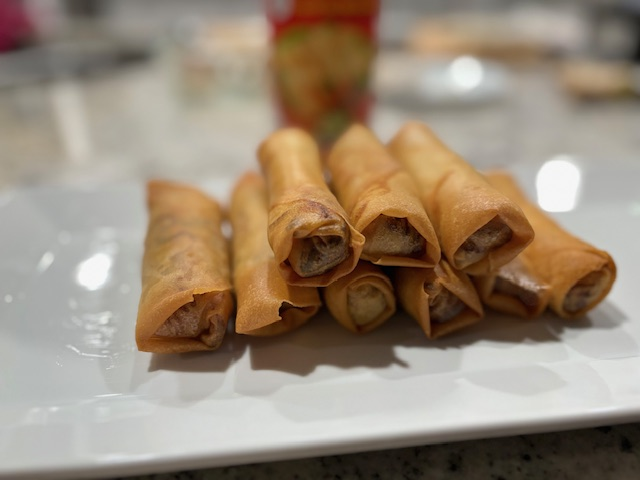
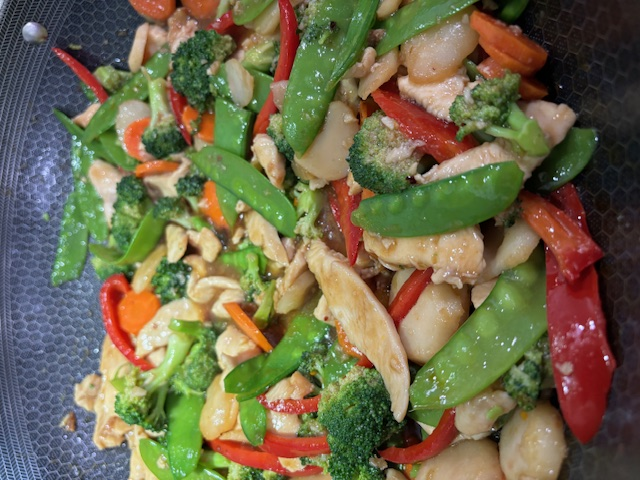

| Fried Rice |
|---|
| Stir-fried rice with savory Spam, eggs, vegetables, and soy sauce. |
| Cantonese Chow Mein |
|---|
| Crispy pan-fried noodles topped with stir-fried meats and vegetables in a light savory sauce. |
| Beef Chow Fun |
|---|
| Stir-fried wide rice noodles with tender beef, bean sprouts, and scallions in a rich soy-based sauce. |
| Char Siu (Chinese Bbq Pork) |
|---|
| Sweet and smoky roasted pork marinated in a fragrant Chinese barbecue glaze. |
| Crispy Pork Belly |
|---|
| Roasted pork belly with ultra-crispy skin and tender, juicy meat. |
| Chicken Lettuce Wraps |
|---|
| Minced chicken stir-fried with vegetables and served with crisp lettuce cups. |
| Spring Rolls |
|---|
| Crispy golden rolls filled with a savory mix of vegetables and ground pork. |

| Chicken Stir-Fry |
|---|
| Sliced chicken breast sautéed with mixed vegetables in a savory garlic sauce. |

| Beef and Shrimp Lo Mein |
|---|
| Soft egg noodles tossed with beef, shrimp, and vegetables in a savory soy sauce. |
| Pork and Cabbage Dumplings |
|---|
| Juicy dumplings filled with seasoned pork and cabbage. **If you’re interested in mastering the beloved dumpling from scratch—including making the filling, and cooking them in three different ways, please book a dedicated two-hour dumpling class. Alternatively, for a quicker introduction, you may opt for a condensed session focused solely on dumpling wrapping as part of your multi-dish class. ** |
| Mapo Tofu |
|---|
| Silken tofu in a spicy Sichuan sauce with ground pork and fermented bean paste. |
| Braised Pork Belly |
|---|
| Tender pork belly slowly braised in soy sauce, sugar, and aromatic spices. |
| Singapore-style Noodles |
|---|
| Thin rice noodles stir-fried with curry, shrimp, BBQ pork, eggs, and vegetables. |